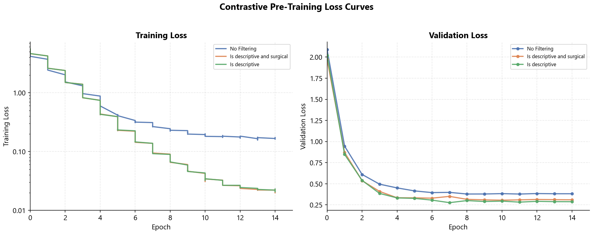
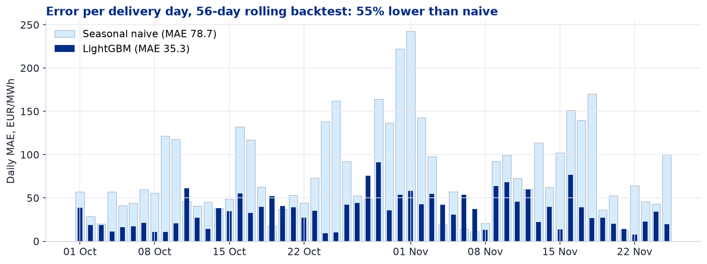
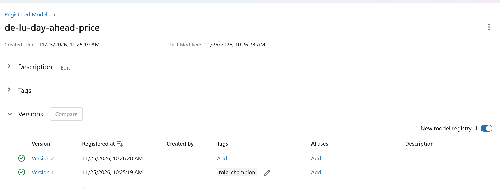

I teach models to spot broken chips, find one frame among 80 surgery videos, and settle arguments about how AI should fix code.
Open to full-time roles from Dec 2026Willing to relocateEnglish C2 · Urdu · German A2
At KLA
KLA
5 releasesin production
Wafer defect detection
KLA, with Micron Technology
Label-free autoencoder that flags defective CD-SEM images and groups them by likely root cause, running on customers' CPU-only fab hardware.
PyTorch · Optuna · K-fold CV
1/4The problem. Fabs measure their chip patterns with CD-SEM images. Bad images were caught by people paging through them one at a time.
2/4Learn normal, no labels needed. A convolutional autoencoder learns to rebuild normal images. Cleaning, a masked loss and K-fold cross-validation kept it honest.
3/4Flag what it can't rebuild. The difference between an image and its reconstruction is scored patch by patch against adaptive thresholds.
4/4Explain it, then ship it. Flagged images are grouped by likely root cause, so engineers get a reason and not just a score. I worked with Micron's engineers on their feedback over 5 releases.
KLA
On-siteair-gapped
LLM agents for lithography (aiLITHO)
KLA
Tools, document ingestion and evaluation for an agent platform engineers use to query manufacturing data in plain language.
LangGraph · vLLM · MLflow
1/3Plain-language access. Engineers ask a question, and an LLM agent picks the tools that query manufacturing data and expert knowledge. The model runs on-site, because the data never leaves the fab.
2/3Making knowledge searchable. A multimodal pipeline turns manuals, PDFs, slides, images and recorded expert interviews into knowledge the agent can search, without losing the metadata search depends on.
3/3Measuring it. Every run is traced in MLflow and scored by an LLM judge. One failing analysis turned out to be a tool-design problem, so I proposed a single bounded tool that ranks all candidates in one call.
Surgical video · NCT Dresden
Graphic content. This section shows real footage from inside the body during surgery, including some blood. Images are blurred until you choose to see them.
Frames from public narrated surgery videos, the kind of teaching video the pretraining data is built from. Each one links to its video on YouTube.
Learning surgery from the surgeon's own words
phase F1 12% → 44.4%
Surgeons narrate their teaching videos as they operate. I rebuilt the SurgLaVi pipeline from scratch to turn that speech into 94,094 clip-caption pairs from about 1,100 videos, then trained a video encoder and a text encoder to agree. The interesting part was the data: most of what surgeons say is not about what the camera shows.
Would you train on it? Two filters decide: is the frame a surgical scene, and does the line describe what is visible? Try them on real frames and narration from these videos.
Frame only, no narration
So I am pushing towards the gallbladder, not towards the duct.
This is a video of an elective cholecystectomy for gallstones.
Frame only, no narration
Unfortunately, I had the XI Robot that day.
Now we see the surface of the liver.
Lines are speech-to-text transcripts from the linked videos; the frame and the line come from the same video, not always the same second.
1/3The pipeline. Transcribe the narration, cut it into clip-caption pairs, filter out the pairs that fail either test above, then train video and text encoders to agree.

2/3Cleaner data trains better. Both filtered versions reach lower training and validation loss than the full, unfiltered set.
3/3Less data, better model, then add time. 64,962 filtered clips beat all 94,094 on Cholec80 surgical phases, and a temporal model on the frozen features nearly quadrupled phase F1. I trained for less time than the original paper, so compare the bars rather than the absolute scores.
Find the frame
top-1 98%, under a second
Show it one frame from an operation and it tells you which of 80 surgery videos it came from, and when. I compared general and surgical foundation-model encoders and three FAISS index types, with 8,000 queries per image perturbation to test robustness. Code
OpenCLIP · FAISS · Cholec80
M.Sc. thesis
ScaDS.AI
55.2%vs 34.5%, 310 bugs
Diffusion vs autoregressive code repair
M.Sc. thesis, TU Dresden / ScaDS.AI
Does a diffusion model really repair code better than an autoregressive one? Only when it is told where the fix goes and how long it is.
Qwen2.5-Coder-7B · FSDP · Slurm · H100
1/3The question. AR models write code left to right. Diffusion models fill a masked gap all at once, which sounds perfect for fixing a bug in the middle of a file. Does it actually work better?
2/3A fair fight. I adapted one 7B model twice, once as AR and once as diffusion, with identical data and compute on H100 clusters. Both were then tested on the same 310 real bugs.
3/3It depends on what you tell it. Told where the fix goes and how long it is, diffusion repaired 55.2% against 34.5%. Without the lengths, AR comes out ahead. The answer is in the information, not the paradigm.
On the side
NAECO Blue
−55%error vs naive
Day-ahead power price forecaster
2026 rebuild of my NAECO Blue forecasting work
Tomorrow's German electricity price, hour by hour, from public grid data, built so a new model only replaces the old one if it is better.
LightGBM · NHITS · MLflow · Terraform
1/3Forecast vs reality. Two weeks of the rolling backtest: the actual price (black), my LightGBM forecast (blue) and "same hour last week" as the naive baseline (dashed).

2/3Every day, scored. Across 56 days the error was 35.3 EUR/MWh against 78.7 for the naive baseline, 55% lower. Wind-driven swings are where naive falls apart.

3/3Promotion gate. Each trained model is registered in MLflow, and a new version only becomes the champion if it beats the current one on the backtest.
An agent that writes pytest suites for untested Python code, then fixes its own failing tests until they pass.
LangGraph · FastAPI · Docker · mutmut
The loop. It reads the code's structure, writes tests, runs them in a sandbox, and repairs them from the tracebacks or starts fresh when stuck. Mutation testing then plants bugs to check that the tests catch them: 92.9% caught across 16 real modules.
A diligence tool for investors that would rather say "not enough evidence" than make something up.
FastAPI · PostgreSQL/pgvector · LangGraph
Evidence first. GitHub, the web, arXiv and uploaded documents become sourced evidence. Every claim keeps its source, contradictions stay visible, and when the evidence is thin it says so.
Experience & education
KLA, Working Student, AIML and LLM tools for chip manufacturing, deployed on-site
NCT Dresden, Intern, Machine LearningSurgical video retrieval and pretraining
NAECO Blue, Working Student, Data ScienceDay-ahead energy price forecasting and dashboards
TU Dresden, M.Sc. Computational Modelling and SimulationThesis supervised by Prof. Michael Färber
PIEAS, B.Sc. Computer ScienceGDSC campus lead: 280 → 620 members
In the margins
Most evenings it's jazz (Nujabes, always), a Persona save file I've sunk too many hours into, or another One Piece arc. Pokémon and Dragon Ball Z got me here first.